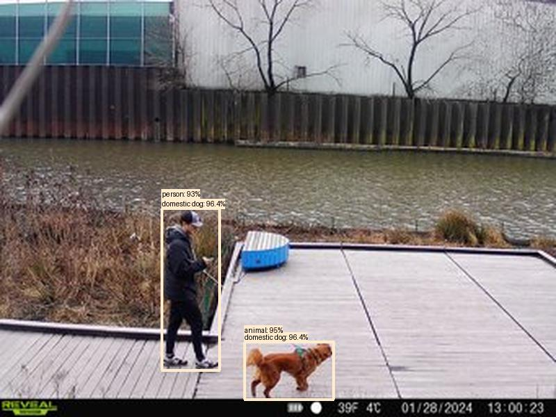
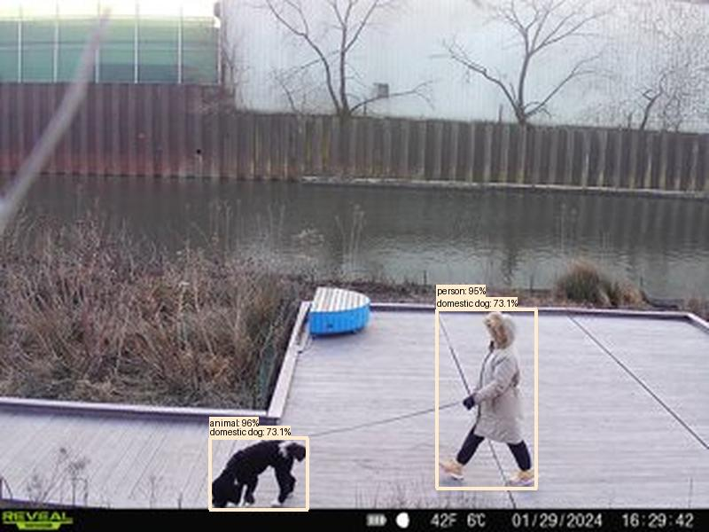
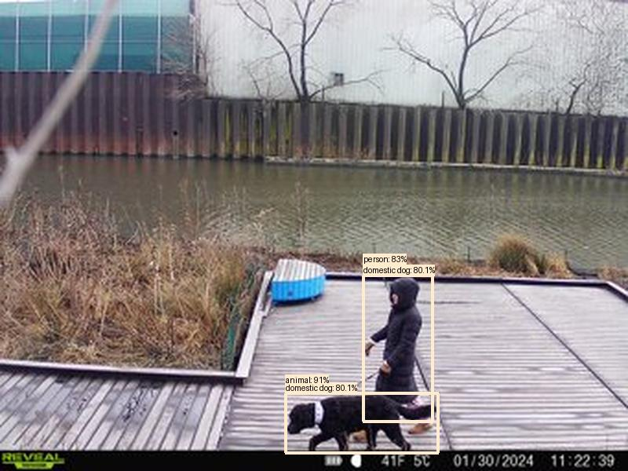

Result type: detections_animal_person, image: images/batch_0/2024-01-31_LearningPlatformBeaver--SYFW0097.JPG, max conf: 0.954
Result type: detections_animal_person, image: images/batch_0/2024-01-31_LearningPlatformBeaver--SYFW0174.JPG, max conf: 0.958
Result type: detections_animal_person, image: images/batch_0/2024-01-31_LearningPlatformBeaver--SYFW0183.JPG, max conf: 0.907
